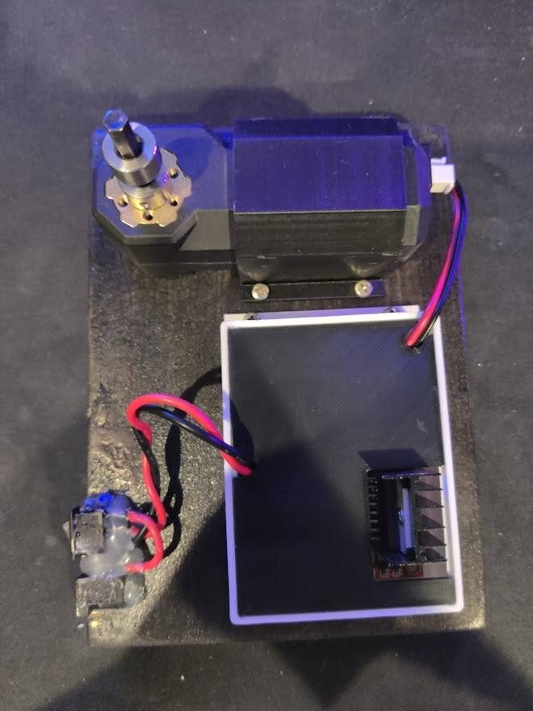
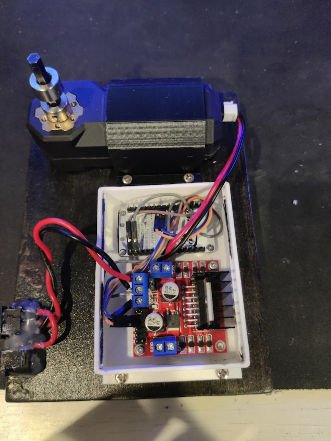
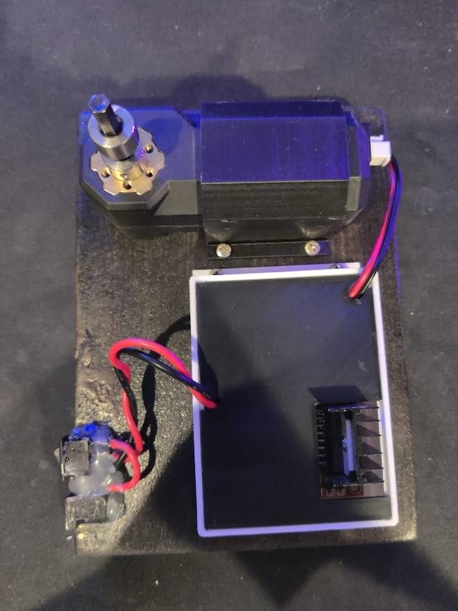
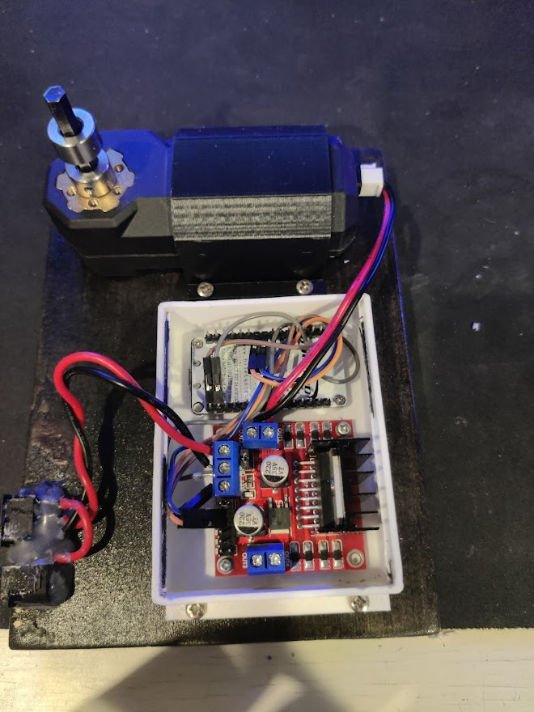

This circuit board serves as the backbone of communications for the Wentworth PocketQube satellite. It uses radio frequency signal to communicate with ground stations on Earth. It uses the communication protocol, SPI to interact woth the satellite's STM32 microcontroller. It implements a SX1278 radio transciever as well as a low noise amplifier, power amplifier, and RF switch.
Powered by an ESP8266
-L298N H-Bridge
-3D printed enclosure and motor mount
-WiFi controllable